This article walks through every layer function in
ggpointless. The package groups its layers into two broad
categories:
- Data transformations — geoms backed by a stat that fits or transforms data.
-
Visual effects — drop-in replacements for
ggplot2layers with extra visual flair: alpha gradients, glows, fading reference lines. These do not add statistical meaning; they re-render the same data but give you some additional features to change the appearance of your data.
Note on devices: Most R graphics devices ship with gradient support (ragg, Cairo-backed PNG on Linux/macOS, SVG). The notable exception is
grDevices::pdf(), on which the fade family falls back to flat semi-transparent fills.
Setup
library(ggpointless)
#> Loading required package: ggplot2
# Brand palette -- kept in sync with the README
cols <- c("#311dfc", "#a84dbd", "#d77e7b", "#f4ae1b")
theme_set(
theme_minimal() +
theme(
legend.position = "bottom",
geom = element_geom(fill = cols[1]),
palette.fill.discrete = cols,
palette.colour.discrete = cols,
palette.fill.continuous = cols,
palette.colour.continuous = cols
)
)geom_arch() and geom_catenary()
A catenary is the curve formed by a flexible chain or cable hanging freely between two fixed supports. It follows this equation:
\[y = a \cosh\!\left(\frac{x}{a}\right)\]
geom_catenary() draws a hanging-chain catenary curve
between successive points; geom_arch() draws a catenary
arch, i.e. the inverted curve.
geom_arch
The shape is controlled by arch_length or
arch_height (vertical rise above the highest endpoint of
each segment). By default the arc length is twice the Euclidean distance
calculated for each segment.
ggplot(data.frame(x = 1:2, y = c(0, 0)), aes(x, y)) +
geom_arch(arch_height = 0.6)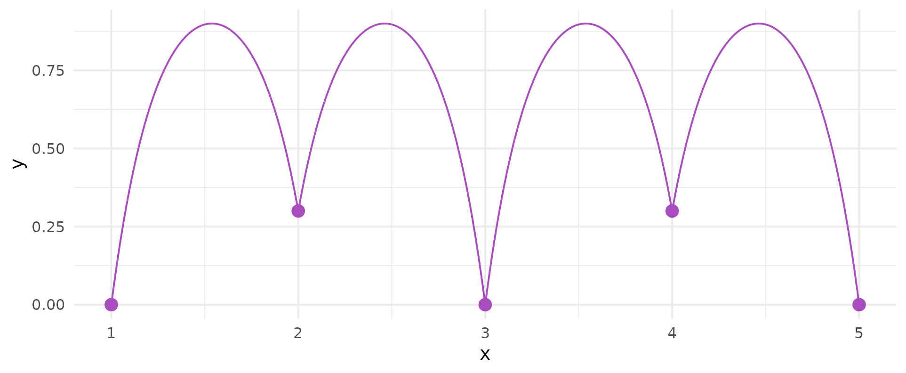
stat_arch() exposes the underlying computation. Here it
shows the effect of different arch_height values between
the same two endpoints:
ggplot(data.frame(x = c(0, 2), y = c(0, 0)), aes(x, y)) +
lapply(c(0.5, 1.5, 3), \(ah) {
stat_arch(arch_height = ah, aes(colour = paste0("arch_height = ", ah)))
}) +
labs(colour = NULL)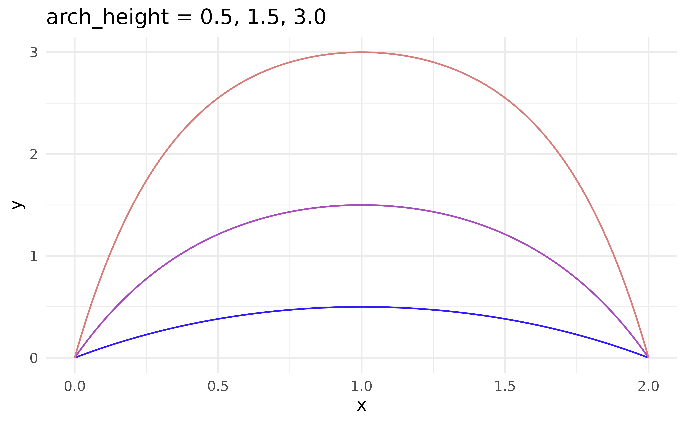
A real-world application is the Rice House in Eltham, whose distinctive roofline consists of shallow catenary arched spans rising above vertical columns. The sketch below reconstructs its simplified cross-section:
rice_house <- data.frame(
x = c(0, 1.5, 2.5, 3.5, 5),
y = c(0, 1, 1, 1, 0)
)
ggplot(rice_house, aes(x, y)) +
geom_arch(arch_height = 0.15, linewidth = 2, colour = "#333333") +
geom_segment(aes(xend = x, yend = 0), colour = "#333333") +
geom_hline(yintercept = 0, colour = "#4a7c59", linewidth = 3) +
coord_equal() +
theme_void() +
labs(caption = "Rice House, Eltham (simplified catenary cross-section)")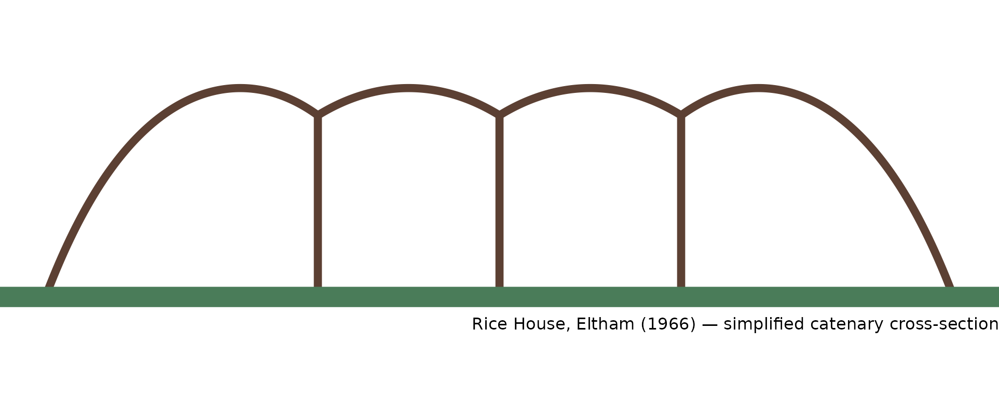
geom_catenary
geom_catenary() draws the hanging-chain form between
successive points.
set.seed(1)
ggplot(data.frame(x = 1:6, y = sample(6)), aes(x, y)) +
geom_catenary() +
geom_point(size = 3, colour = "#333333")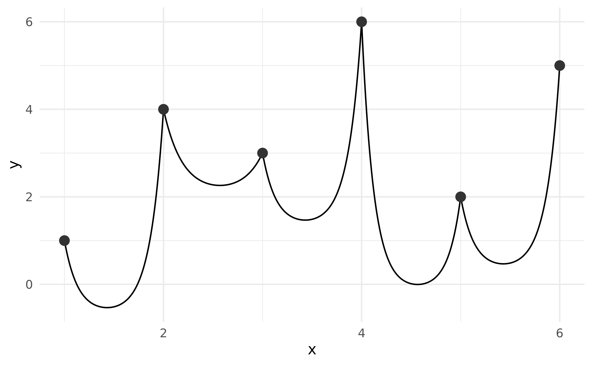
By default the chain length is twice the Euclidean distance per
segment. Pass chain_length to set an explicit arc length —
longer values make the chain sag more. If the value is shorter than the
straight-line distance a warning is issued and a straight line is drawn
instead.
ggplot(data.frame(x = c(0, 1), y = c(1, 1)), aes(x, y)) +
lapply(c(1.5, 1.75, 2), \(cl) {
geom_catenary(chain_length = cl)
}) +
ylim(0, 1.05)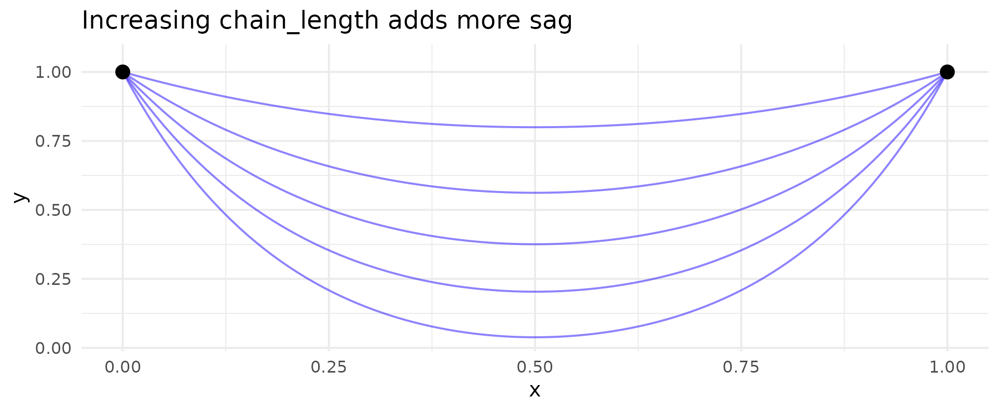
sag sets the vertical drop below the lowest endpoint of
each segment, giving you direct control over how much the chain
droops:
df_sag <- data.frame(x = c(0, 2, 4, 6), y = c(1, 1, 1, 1))
ggplot(df_sag, aes(x, y)) +
geom_catenary(sag = c(0.1, 0.5, 1.2)) +
geom_point(size = 3, colour = "#333333")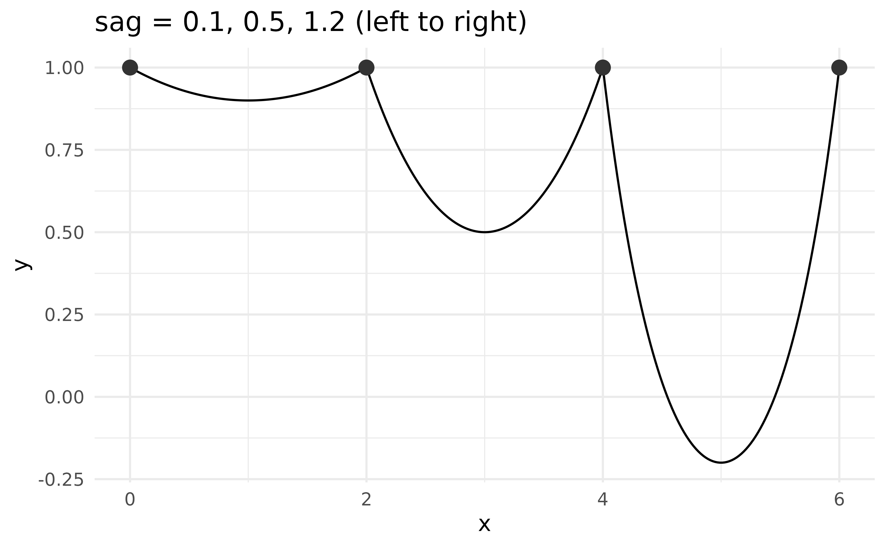
chain_length and sag can be mixed per
segment by placing NA in the position where the other
argument should win. When both are non-NA for the same
segment, sag takes precedence.
df_sag <- data.frame(x = c(0, 2, 4, 6), y = c(1, 1, 1, 1))
ggplot(df_sag, aes(x, y)) +
geom_catenary(
chain_length = c(2, NA, 3),
sag = c(0.1, 0.5, NA)
) +
geom_point(size = 3, colour = "#333333") +
ylim(c(-.25, 1))
#> Both `sag` and `chain_length` supplied for 1 segment; using `sag`.
#> This message is displayed once every 8 hours.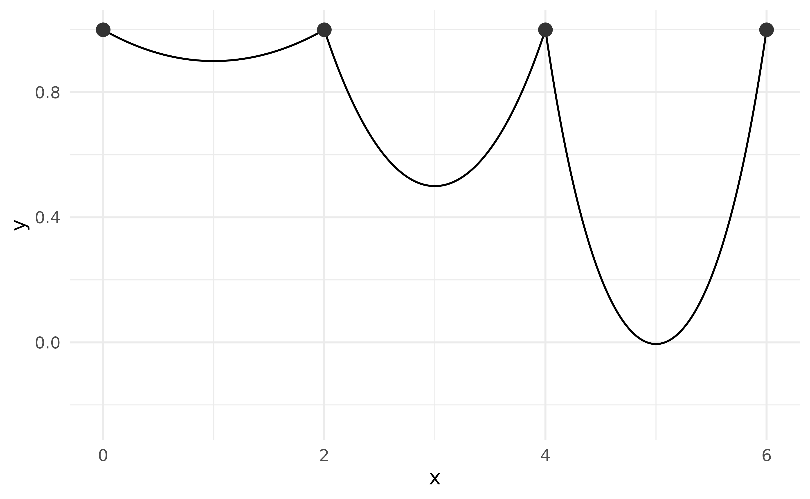
geom_chaikin
Chaikin’s corner-cutting algorithm smooths a polygonal path by
iteratively replacing each corner with two new points placed at a given
ratio along the adjacent edges. With ratio = 0.25 (the
default) and iterations = 5 the path converges to a smooth
B-spline approximation.
set.seed(42)
dat <- data.frame(x = seq.int(10), y = sample(15:30, 10))
ggplot(dat, aes(x, y)) +
geom_line(linetype = "dashed", colour = "#333333") +
geom_chaikin(colour = cols[1])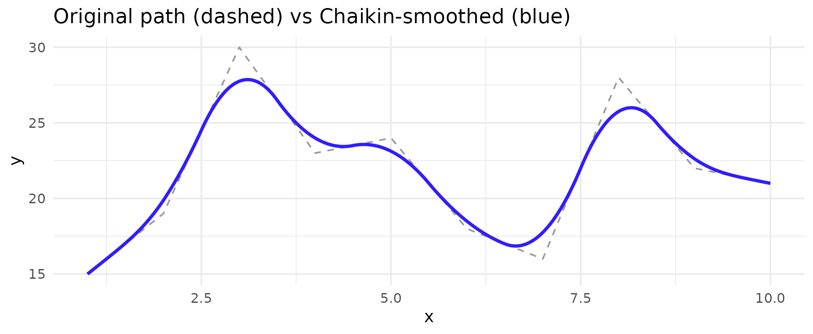
ratio controls how aggressively corners are cut. At
ratio = 0.5 the new points coincide with the edge
midpoints, producing the maximum rounding possible in a single pass.
triangle <- data.frame(x = c(0, 0.5, 1), y = c(0, 1, 0))
ggplot(triangle, aes(x, y)) +
geom_polygon(fill = NA, colour = "grey70", linetype = "dashed") +
lapply(c(0.1, 0.25, 0.5), \(r) {
geom_chaikin(ratio = r, mode = "closed", aes(colour = paste0("ratio = ", r)))
}) +
labs(colour = NULL) +
coord_equal()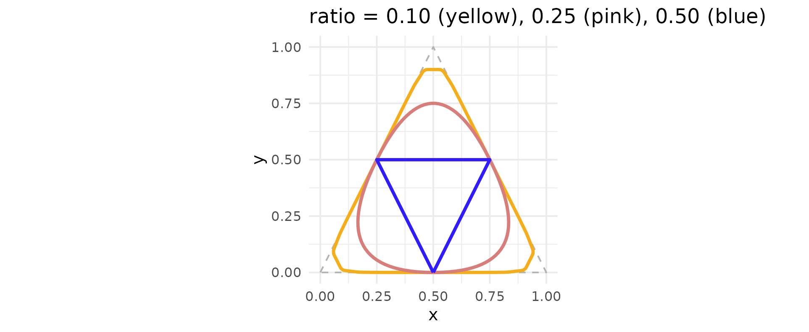

geom_fourier
geom_fourier() fits a Fourier series (via fft())
to the supplied x/y observations and renders
the reconstructed smooth curve. By default all harmonics up to the
Nyquist limit are used, giving an exact interpolating fit.
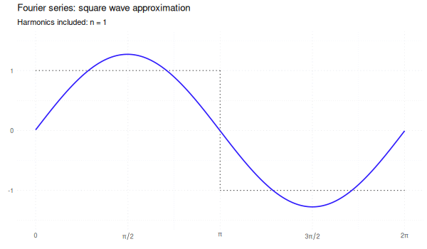
The source script that generates the animation is at
inst/scripts/gen_fourier_gif.R.
Reducing n_harmonics progressively smooths the result.
Fewer harmonics produce a smoother, low-frequency summary; retaining all
harmonics reproduces the original signal exactly (up to interpolation
artefacts).
set.seed(42)
n <- 150
df_f <- data.frame(
x = seq(0, 2 * pi, length.out = n),
y = sin(seq(0, 2 * pi, length.out = n)) +
0.4 * sin(3 * seq(0, 2 * pi, length.out = n)) +
rnorm(n, sd = 0.25)
)
ggplot(df_f, aes(x, y)) +
geom_point(alpha = 0.25) +
lapply(c(1, 3), \(nh) {
geom_fourier(aes(colour = paste0("n_harmonics = ", nh)), n_harmonics = nh)
}) +
labs(colour = NULL)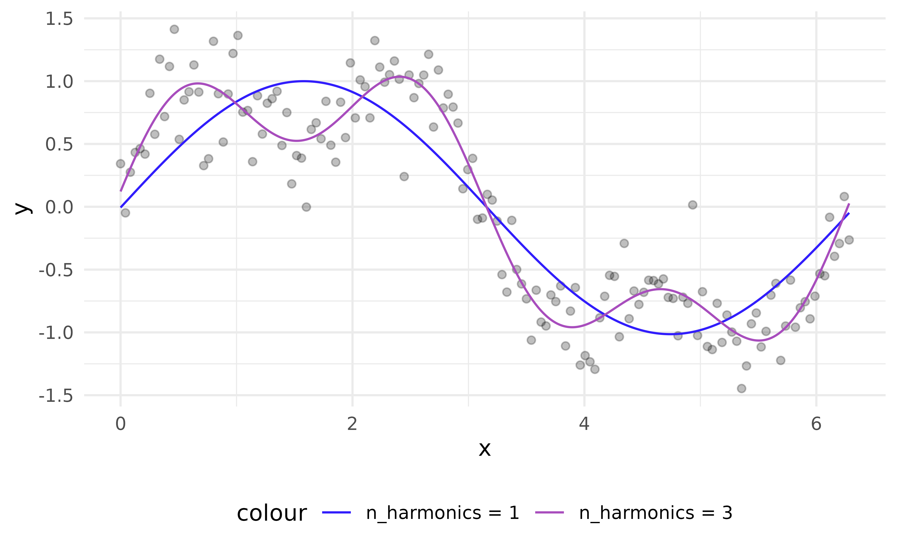
Detrending
A linear drift in the data will dominate the low-frequency
coefficients, preventing the Fourier series from capturing the periodic
structure. Set detrend = "lm" (or "loess") to
subtract the trend before the transform; it is added back afterwards so
the output remains on the original scale.
set.seed(3)
x_d <- seq(0, 4 * pi, length.out = 100)
df_d <- data.frame(
x = x_d,
y = sin(x_d) + x_d * 0.4 + rnorm(100, sd = 0.2)
)
ggplot(df_d, aes(x, y)) +
geom_point(alpha = 0.35) +
geom_fourier(aes(colour = "detrend = NULL"),
n_harmonics = 3
) +
geom_fourier(
aes(colour = "detrend = \"lm\""),
n_harmonics = 3,
detrend = "lm") +
labs(
x = NULL, y = NULL
)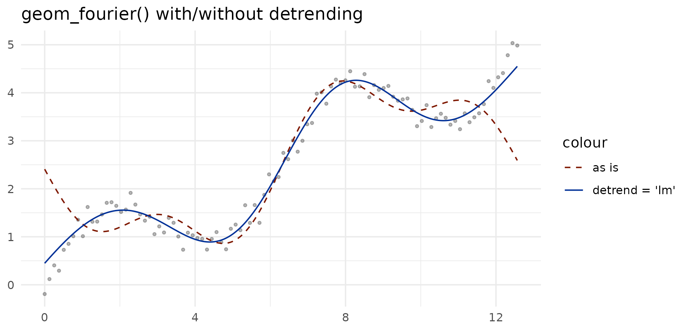
geom_gridline
geom_gridline() draws panel grid lines as a regular
layer, so they can sit on top of other layers instead of
disappearing behind them. Line styling falls through from
theme(panel.grid.*) for any property you don’t explicitly
override. To remove the underlying theme grid (so the layer’s lines
don’t stack with ggplot2’s own grid) add
+ theme(panel.grid = element_blank()).
ggplot(mpg, aes(class)) +
geom_bar() +
geom_gridline()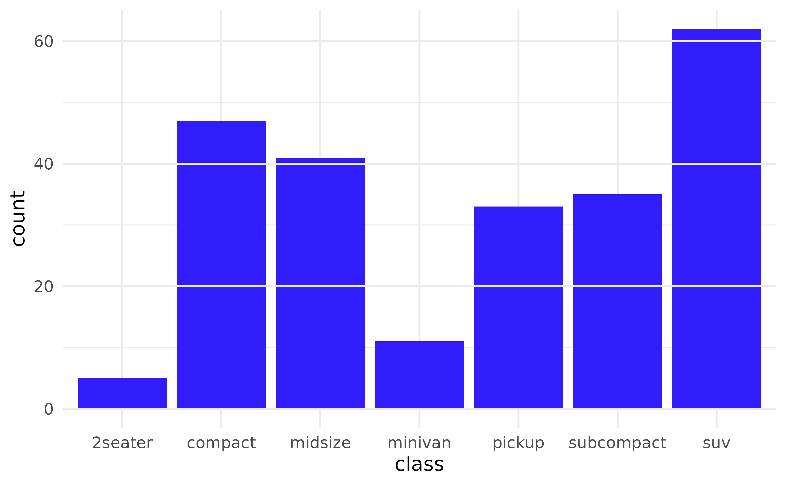
Picking axes
Use grids = "x", "y", or
c("x", "y") to choose which axis to draw, and
lines = c('major', 'minor') to draw minor (grid-)lines too.
Positions come from the trained scale — no manual breaks needed.
ggplot(mpg, aes(y = class)) +
geom_bar() +
geom_gridline(grids = "x", lines = c("major", "minor")) +
scale_x_log10()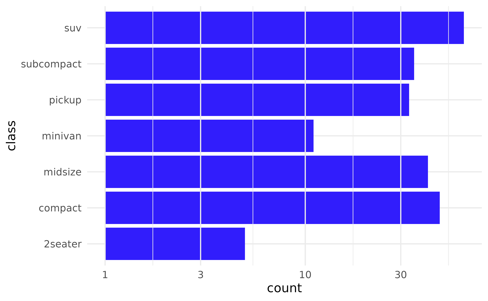
But you can of course add breaks whenever you want and
geom_gridline() picks these values up automatically.
ggplot(mpg, aes(y = class)) +
geom_bar() +
geom_gridline(
grids = "x",
linewidth = 2,
colour = cols[4]
) +
scale_x_log10(breaks = c(5, 10, 20))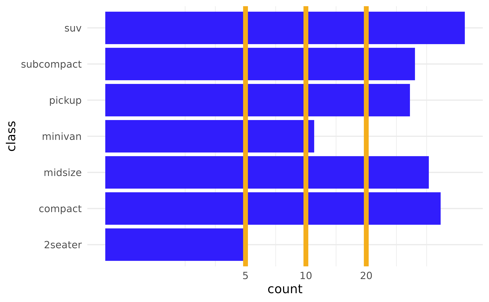
Polar coordinates
geom_gridline() works under coord_polar()
and coord_radial() too.
ggplot(mtcars, aes(x = factor(1), fill = factor(cyl))) +
geom_bar(width = 1) +
geom_gridline(grids = c("x", "y"), lines = c("major", "minor")) +
coord_polar(theta = "y") +
theme_void()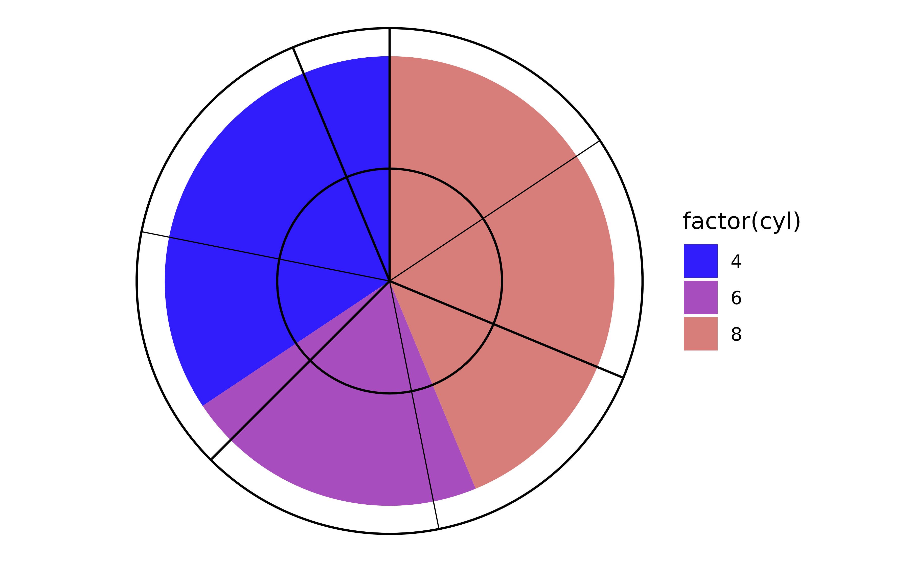
geom_lexis
A Lexis diagram displays lifelines — the duration of individual subjects from start to end — as 45° lines.
geom_lexis() draws a lifeline for each observation from
its x (start) to its xend (end). The
y and yend aesthetics are calculated by
stat_lexis() and represent the cumulative duration.
US Presidential Terms
Here is a lifeline diagram showing the terms of US presidents from
Eisenhower to Trump II, with data augmented from ggplot2’s
presidential dataset:
# Augment presidential data with Biden and Trump II
presidential_update <- data.frame(
name = c("Biden", "Trump"),
start = as.Date(c("2021-01-20", "2025-01-20")),
end = c(as.Date("2025-01-20"), Sys.Date()),
party = c("Democratic", "Republican")
)
df_lexis <- rbind(ggplot2::presidential, presidential_update)
# Combine names with first names for readability
first_names <- c(
Eisenhower = "Dwight",
Kennedy = "John",
Johnson = "Lyndon",
Nixon = "Richard",
Ford = "Gerald",
Carter = "Jimmy",
Reagan = "Ronald",
Bush = "George H. W.",
Clinton = "Bill",
Bush = "George W.",
Obama = "Barack",
Trump = "Donald",
Biden = "Joe",
Trump = "Donald"
)
df_lexis$name <- paste(first_names, df_lexis$name)
p <- ggplot(df_lexis, aes(x = start, xend = end, group = name, colour = party)) +
scale_colour_manual(
values = c("Democratic" = "#0044c9", "Republican" = "#DE0100")
) +
scale_linetype_identity() +
scale_y_continuous(
breaks = c(2, 4, 6, 8) * 365.25,
labels = \(d) floor(d / 365.25)
) +
labs(
title = "Terms of US Presidents: Eisenhower to Trump II",
caption = sprintf("As of %s.", Sys.Date()),
x = NULL,
y = "Years in office"
) +
coord_fixed()
p + geom_lexis(aes(linetype = after_stat(type)))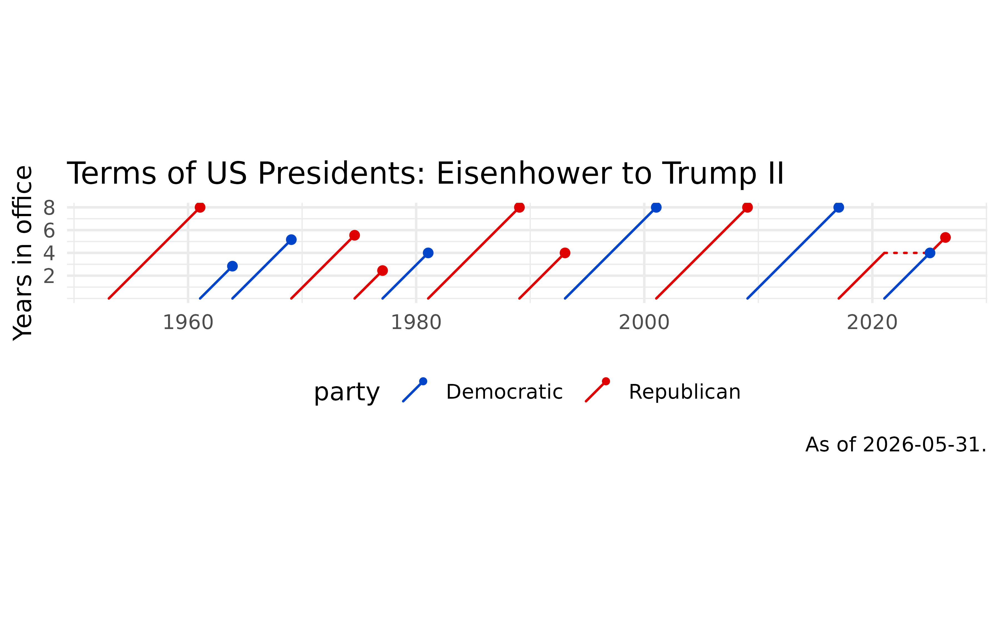
When there is a gap between two terms of the same president (as is
the case with Trump’s two non-consecutive terms), a horizontal dotted
segment bridges the gap. Set gap_filler = FALSE to hide
these gap-fillers and show only the lifelines themselves.
df_lexis_subset <- subset(df_lexis, grepl("Trump|Biden|Obama", name))
p + geom_lexis(aes(linetype = after_stat(type)), gap_filler = FALSE)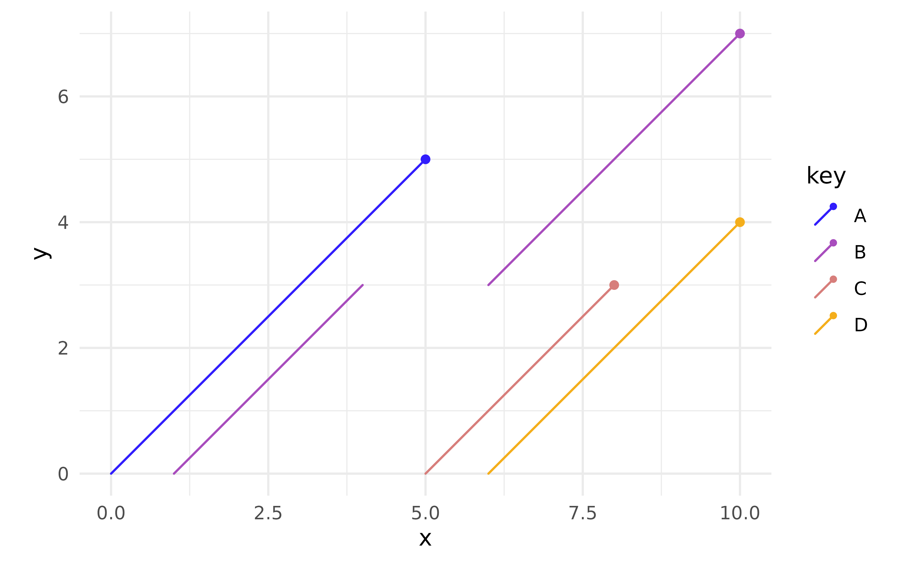
Styling with after_stat(type)
The computed variable type takes the value
"solid" for 45° lifelines and "dotted" for
horizontal gap-fillers. Map it to linetype to make the
distinction explicit. You can also style the endpoint dot independently
of the lifeline colour with point_colour:
df_demo <- data.frame(
key = c("A", "B", "B", "C", "D"),
x = c(0, 1, 6, 5, 6),
xend = c(5, 4, 10, 8, 10)
)
ggplot(df_demo, aes(x = x, xend = xend, group = key, colour = key)) +
stat_lexis(
aes(linetype = after_stat(type)),
point_colour = "#333333",
shape = 21,
fill = "white",
size = 2.5,
stroke = 0.8
) +
scale_linetype_identity() +
coord_equal()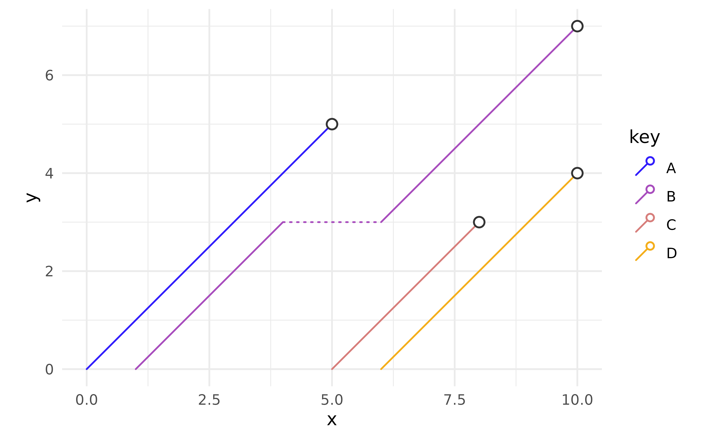
geom_pointless
geom_pointless() highlights selected observations —
first, last, minimum, maximum, or all of them — by default with points.
Its name reflects that it is not particularly useful on its own, but in
conjunction with geom_line() and friends, it adds useful
context at a glance.
x <- seq(-pi, pi, length.out = 100)
df1 <- data.frame(var1 = x, var2 = rowSums(outer(x, 1:5, \(x, y) sin(x * y))))
p <- ggplot(df1, aes(x = var1, y = var2)) +
geom_line()
p + geom_pointless(location = "all", size = 3)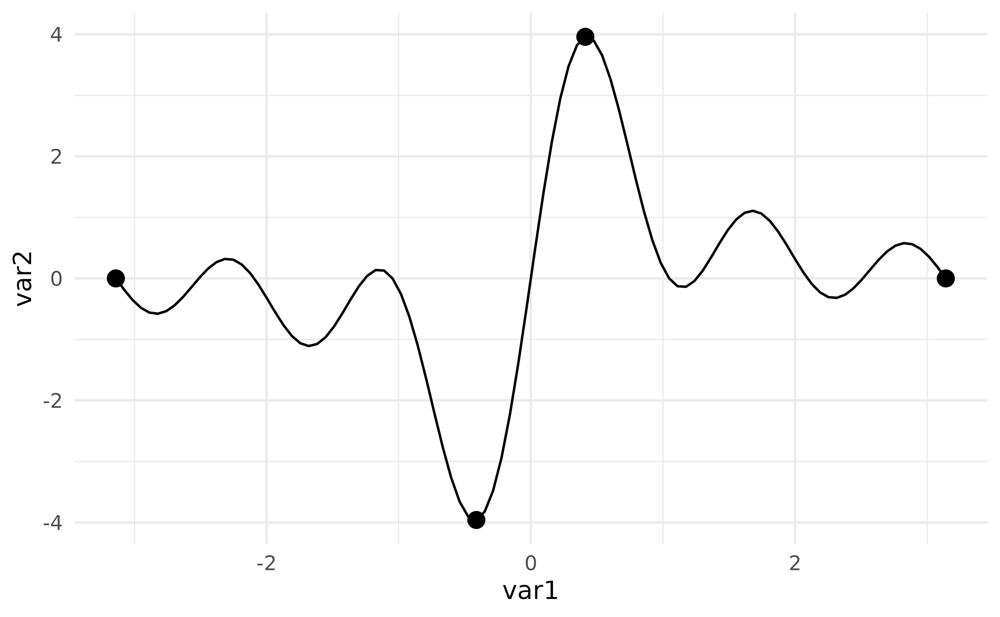
Map the computed variable location to
colour to distinguish the four roles:
p +
geom_pointless(
aes(colour = after_stat(location)),
location = "all",
size = 3
) +
theme(legend.position = "bottom")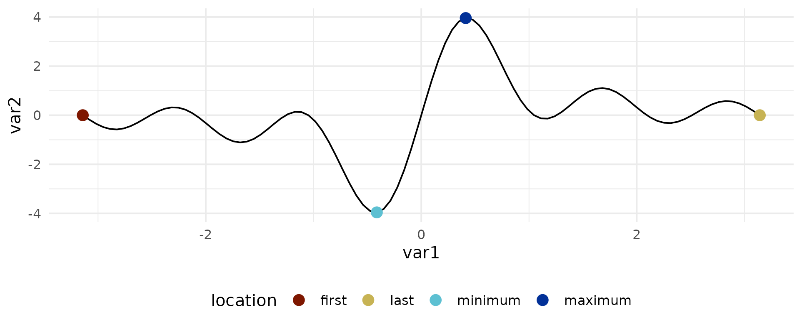
Order and orientation
Locations are determined in data order. This matters when e.g. the path crosses itself:
x <- seq(5, -1, length.out = 1000) * pi
spiral <- data.frame(var1 = sin(x) * 1:1000, var2 = cos(x) * 1:1000)
p_spi <- ggplot(spiral) +
geom_path() +
coord_equal(xlim = c(-1000, 1000), ylim = c(-1000, 1000))
p_spi +
aes(x = var1, y = var2) +
geom_pointless(aes(colour = after_stat(location)), location = "all", size = 3) +
labs(subtitle = "orientation = 'x'")
p_spi +
aes(y = var1, x = var2) +
geom_pointless(aes(colour = after_stat(location)), location = "all", size = 3) +
labs(subtitle = "orientation = 'y'")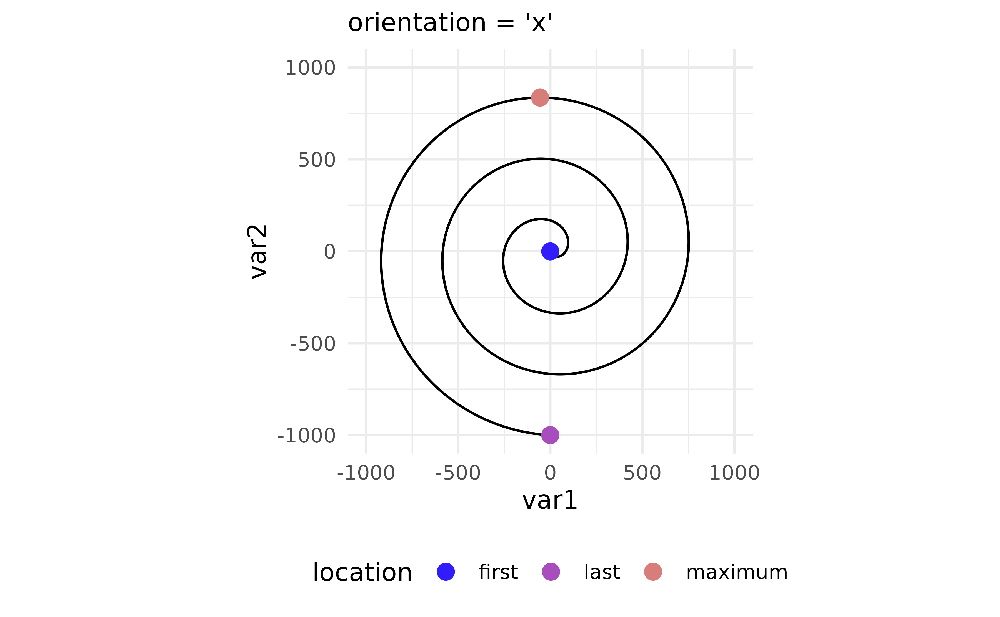
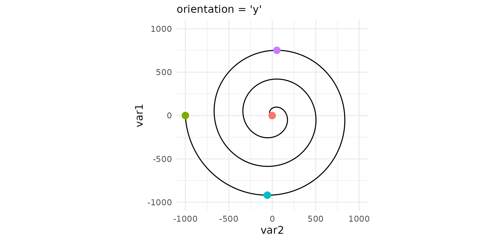
When location = "all", points are drawn bottom to top in
the order: "maximum" < "minimum" <
"last" < "first". Passing an explicit
vector lets you override this:
df2 <- data.frame(x = 1:2, y = 1:2)
p2 <- ggplot(df2, aes(x, y)) +
geom_path() +
coord_equal()
p2 + geom_pointless(aes(colour = after_stat(location)),
location = c("first", "last", "minimum", "maximum"), size = 4
) +
labs(subtitle = "first on top")
p2 + geom_pointless(aes(colour = after_stat(location)),
location = c("maximum", "minimum", "last", "first"), size = 4
) +
labs(subtitle = "maximum on top")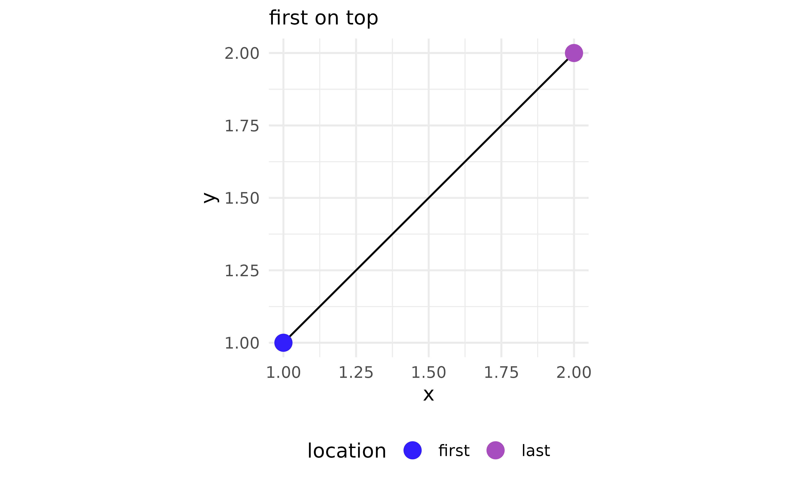
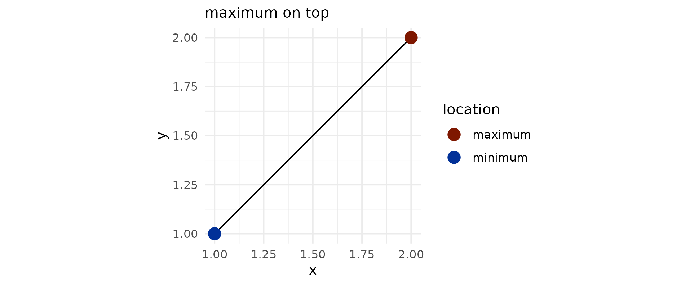
geom_pointless() respects ggplot2’s group
structure and works naturally with facets:
ggplot(
subset(economics_long, variable %in% c("psavert", "unemploy")),
aes(x = date, y = value)
) +
geom_line(colour = "#333333") +
geom_pointless(
aes(colour = after_stat(location)),
location = c("minimum", "maximum"),
size = 3
) +
stat_pointless(
geom = "text",
aes(label = after_stat(y)),
location = c("minimum", "maximum"),
hjust = -.55) +
facet_wrap(vars(variable), ncol = 1, scales = "free_y") +
theme(legend.position = "bottom") +
labs(x = NULL, y = NULL, colour = NULL)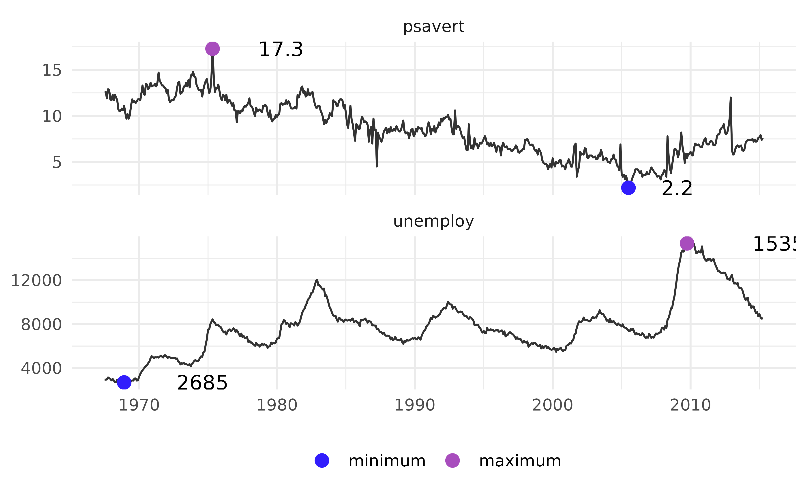
Here it adds horizontal reference lines at the minimum and maximum:
set.seed(42)
df3 <- data.frame(x = 1:10, y = sample(10))
ggplot(df3, aes(x, y)) +
geom_line() +
stat_pointless(
aes(yintercept = y, colour = after_stat(location)),
location = c("minimum", "maximum"),
geom = "hline"
) +
theme(legend.position = "bottom")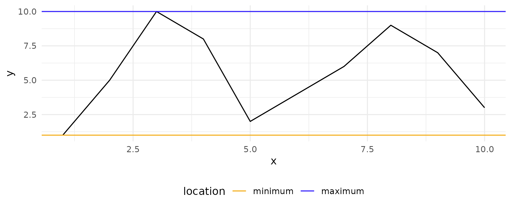
geom_area_fade
geom_area_fade() fills each group with a linear gradient
that fades from the fill colour to transparent at the baseline at
y = 0.
ggplot(economics, aes(date, unemploy)) +
geom_area_fade()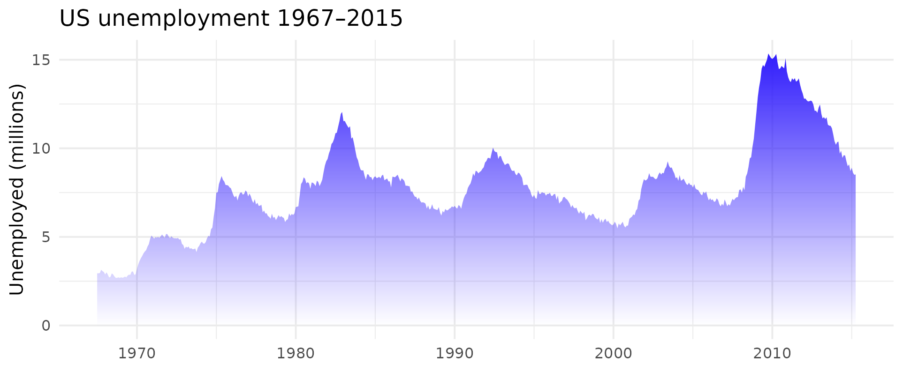
Use alpha to set the starting opacity and
alpha_fade_to to control at which alpha value the gradient
ends.
ggplot(economics, aes(date, unemploy)) +
geom_area_fade(alpha = 0.5, alpha_fade_to = 0.05)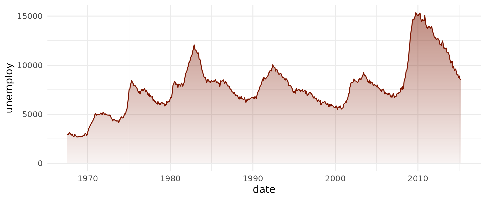
The direction can be reversed — transparent at the top, opaque at the baseline — by swapping their values. The outline colour is unaffected by the alpha logic.
ggplot(economics, aes(date, unemploy)) +
geom_area_fade(alpha = 0, alpha_fade_to = 1)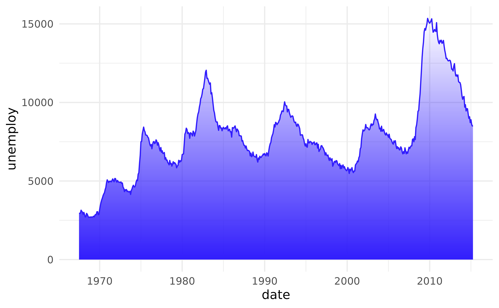
When fill is mapped to a variable inside
aes(), ggplot2 builds a
horizontal colour gradient across each group.
geom_area_fade() overlays its vertical alpha schedule on
top, giving a true 2D gradient: colour varies left-to-right while
opacity fades from the data line down to the baseline.
set.seed(42)
ggplot(economics, aes(date, unemploy)) +
geom_area_fade(aes(fill = pop), outline.type = "none") +
guides(fill = "none")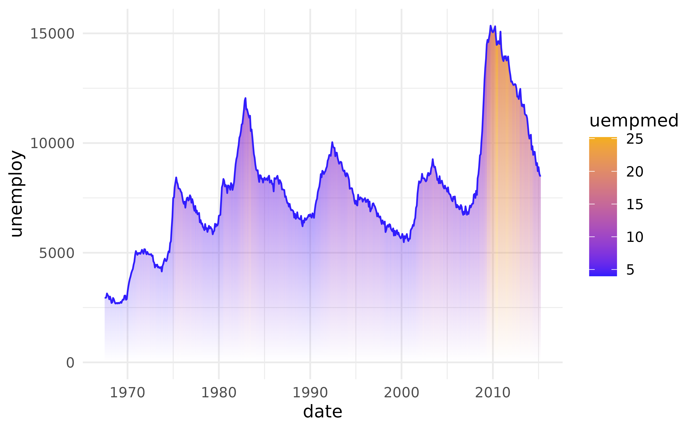
Multiple groups
When your data contains multiple groups, those are stacked
(position = "stack") and aligned
(stat = "align") – just like geom_area(). By
default, the alpha fade scales to the global maximum across all
groups (alpha_scope = "global"), so equal |y|
always maps to equal opacity.
df1 <- data.frame(
g = c("a", "a", "a", "b", "b", "b"),
x = c(1, 3, 5, 2, 4, 6),
y = c(2, 5, 1, 3, 6, 7)
)
ggplot(df1, aes(x, y, fill = g)) +
geom_area_fade()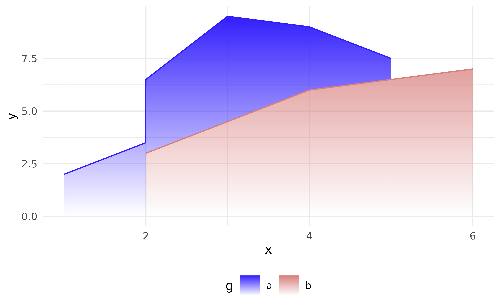
When groups have very different amplitudes, or when you switch from
the default position = "stack" to
stat = "identity", this can make smaller groups nearly
invisible next to dominant groups.
df_alpha_scope <- data.frame(
g = c("a", "a", "a", "b", "b", "b"),
x = c(1, 3, 5, 2, 4, 6),
y = c(1, 2, 1, 9, 10, 8)
)
p <- ggplot(df_alpha_scope, aes(x, y, fill = g))
p + geom_area_fade(
alpha_scope = "global", # default
position = "identity"
)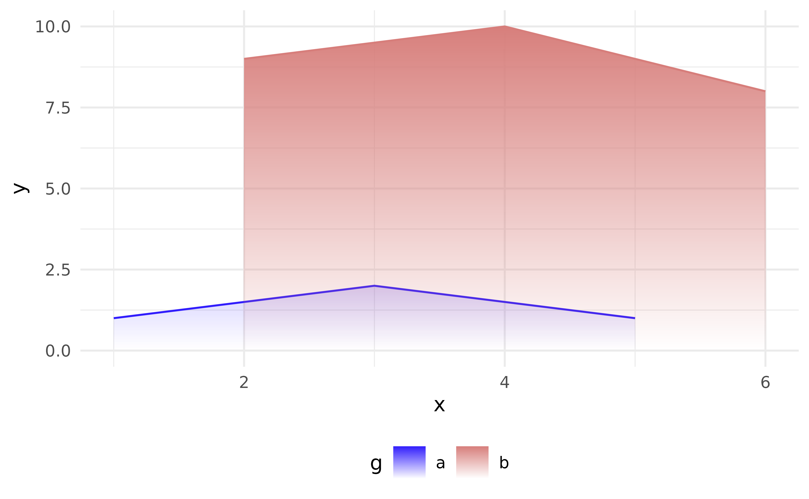
Setting alpha_scope = "group" lets the algorithm
calculate the alpha range for each group separately.
p <- ggplot(df_alpha_scope, aes(x, y, fill = g))
# alpha_scope = "group": each group uses the alpha range independently
p + geom_area_fade(
alpha_scope = "group",
position = "identity"
)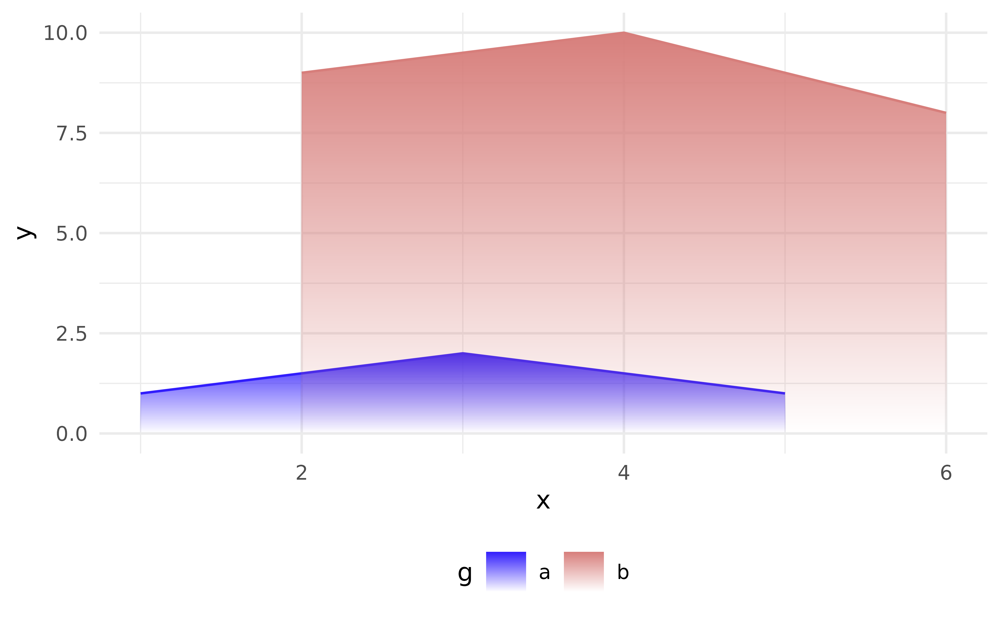
geom_freqpoly_fade
geom_freqpoly_fade() draws the area under a frequency
polygon — the filled region between the binned line and the baseline —
using the same fading gradient as geom_area_fade(). It is
paired with stat_bin(), so all binning parameters
(bins, binwidth, center,
boundary, …) are forwarded.
ggplot(mpg, aes(hwy, fill = drv, colour = drv)) +
geom_freqpoly_fade(position = "identity", alpha = 0.7, bins = 20) +
scale_fill_manual(
values = cols[1:3],
labels = c("4" = "four-wheel", "f" = "front-wheel", "r" = "rear-wheel")
) +
scale_colour_manual(
values = cols[1:3],
labels = c("4" = "four-wheel", "f" = "front-wheel", "r" = "rear-wheel")
) +
labs(x = "Highway MPG", y = NULL, fill = NULL, colour = NULL)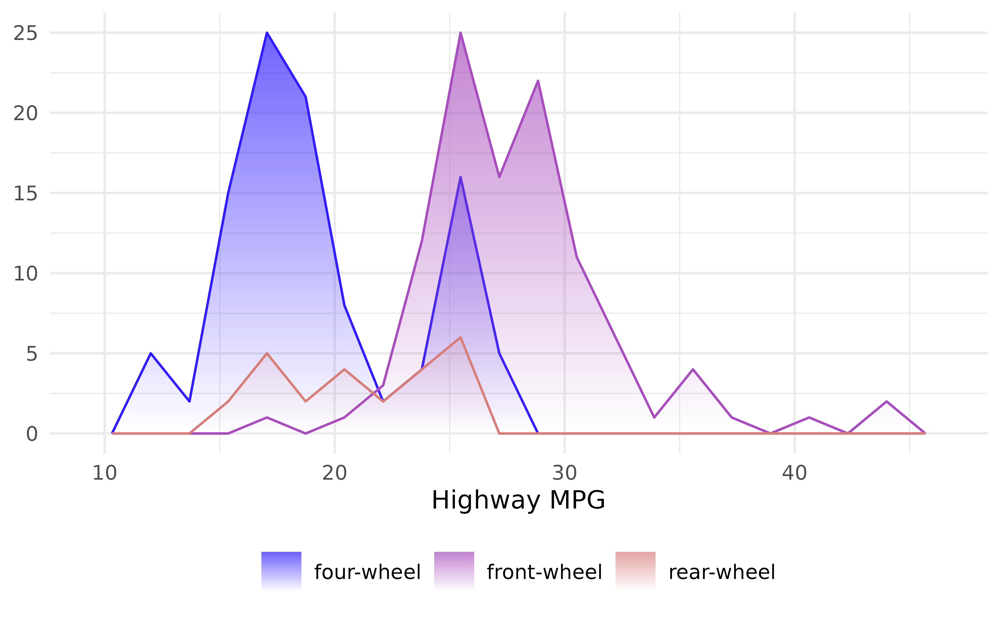
geom_density_fade
geom_density_fade() pairs GeomAreaFade with
stat_density() to compute and draw a kernel density
estimate with a fading gradient. All smoothing parameters
(bw, adjust, kernel,
bounds, …) are forwarded to the stat.
p <- ggplot(iris, aes(Sepal.Length, fill = Species)) +
labs(y = NULL, fill = NULL)
p + geom_density_fade()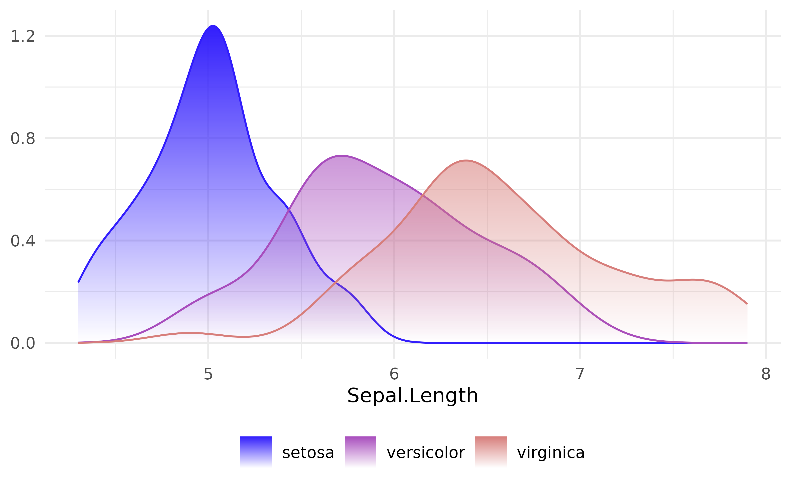
geom_ridgeline_density_fade
A ridgeline plot, popularised by the cover of Joy Division’s album Unknown Pleasures, stacks multiple lines vertically along the y-dimension.
All ridgeline geoms auto-scales the layer so the tallest ridge
overlaps its neighbour by ~50%. The auto-resolved value is reported via
cli::cli_inform() so you have a starting point if you want
to override.
Credit to the ggridges
package.
geom_ridgeline_density_fade() is a wrapper for
geom_ridgeline_fade() where the stat parameter
uses "density" by default to compute kernel density
estimates on the fly.
# ridgeline plots are drawn along the y-dimension
p <- p + aes(y = Species)
p + geom_ridgeline_density_fade(
outline.type = "none",
alpha_scope = "global"
)
#> ℹ Using auto-computed `scale = 1.6`.
#> • Pass an explicit `scale` to override.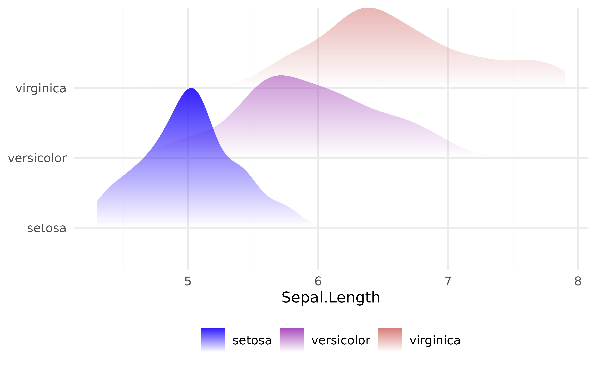
## geom_ridgeline_freqpoly_fade
p + geom_ridgeline_freqpoly_fade()
#> ℹ Using auto-computed `scale = 0.12`.
#> • Pass an explicit `scale` to override.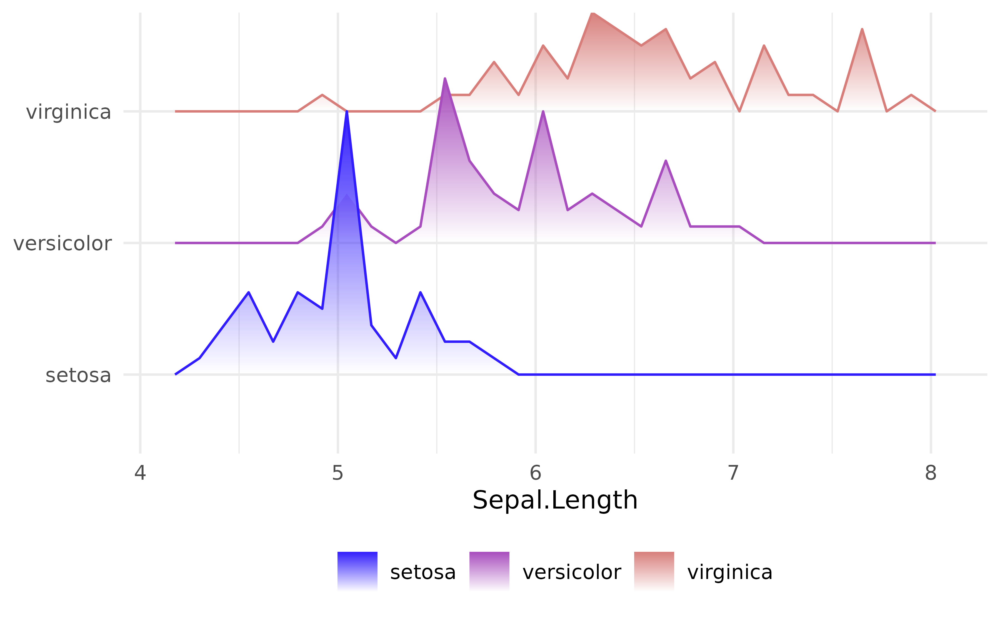
geom_ridgeline_histogram_fade
p + geom_ridgeline_histogram_fade()
#> ℹ Using auto-computed `scale = 0.12`.
#> • Pass an explicit `scale` to override.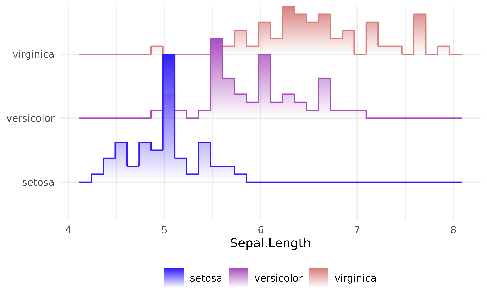
geom_ridgeline_fade
geom_ridgeline_fade() draws overlapping ridge shapes —
each group’s area sits at its own vertical baseline — with the same
fading gradient as geom_area_fade(). In contrast to
geom_ridgeline_density_fade(),
geom_ridgeline_freqpoly_fade() and
geom_ridgeline_histogram_fade() the underlying
stat does not compute the height but you
provide it yourself.
total_sales <- aggregate(
sales ~ year + month,
data = subset(txhousing, year <= 2014),
FUN = sum,
na.rm = TRUE
)
ggplot(total_sales, aes(x = month, y = year, group = year, height = sales)) +
geom_ridgeline_fade(
aes(fill = after_stat(y)),
alpha = 0.5,
# stat = "chaikin" smooths the monthly polyline
stat = "chaikin",
outline.type = "none"
) +
scale_x_continuous(breaks = 1:12, labels = month.abb, expand = 0) +
guides(fill = "none") +
labs(x = NULL, y = NULL) +
theme(panel.grid = element_blank())
#> ℹ Using auto-computed `scale = 0.000055`.
#> • Pass an explicit `scale` to override.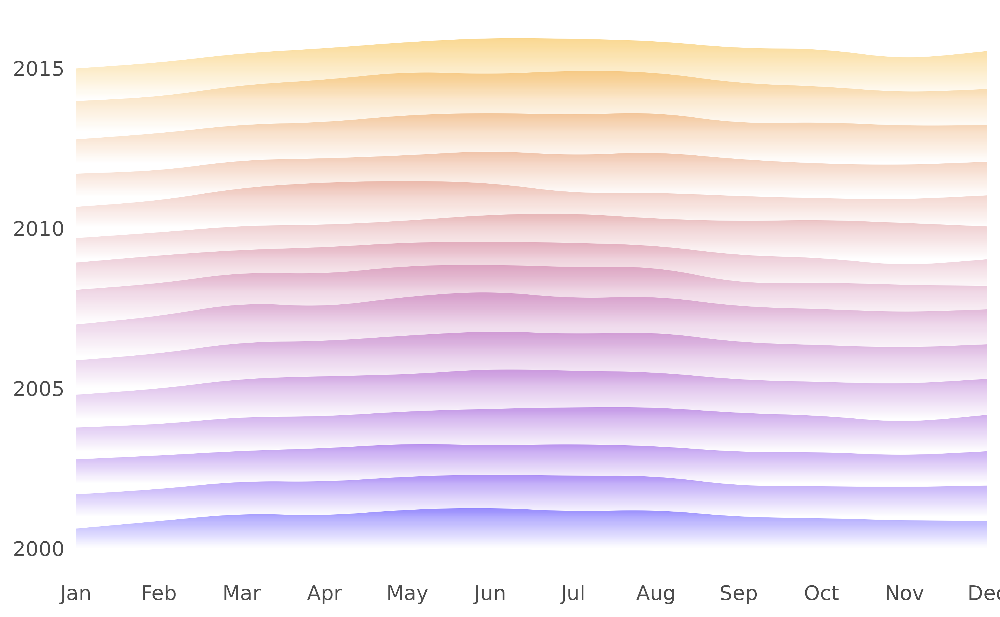
geom_point_glow
geom_point_glow() is a drop-in replacement for
geom_point() that adds a radial gradient glow behind each
point using grid::radialGradient(). By default, alpha,
colour and size inherit their values from geom_point().
# Basic usage
ggplot(mtcars, aes(wt, mpg, colour = factor(cyl))) +
geom_point_glow()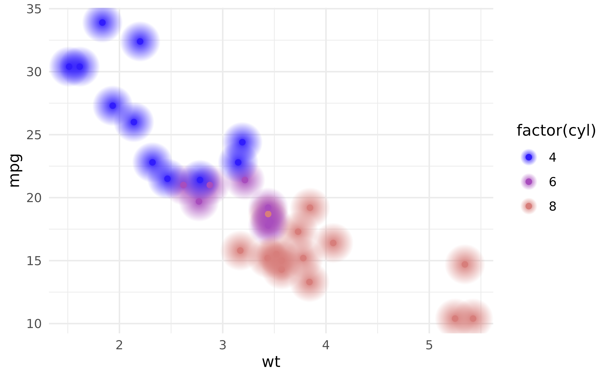
You can control the alpha, colour, and size of the gradient with these arguments:
glow_alphaglow_colourglow_size
# Customizing glow parameters (fixed for all points)
ggplot(mtcars, aes(wt, mpg, colour = factor(cyl))) +
geom_point_glow(
glow_alpha = 0.25,
glow_colour = cols[1],
glow_size = 15
)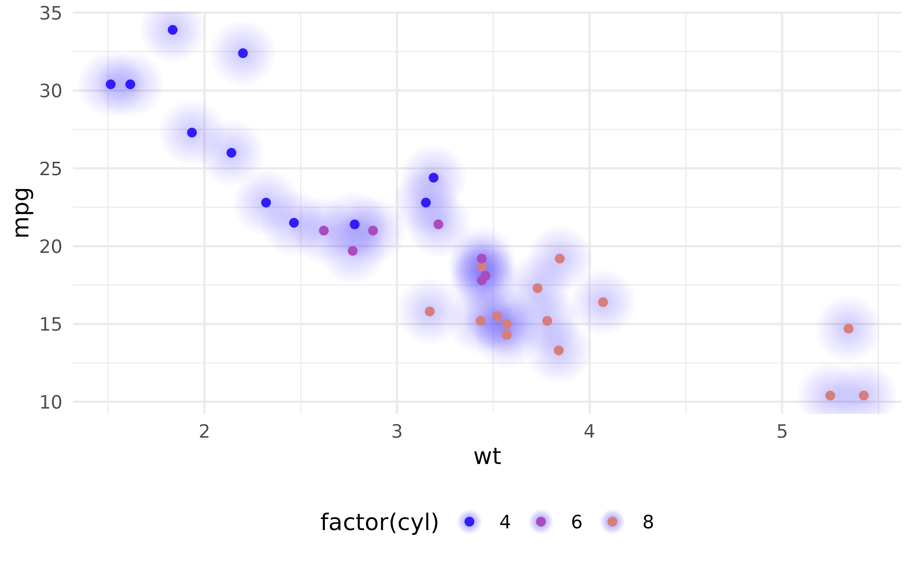
Big Dipper
The constellation Big Dipper, drawn with star positions in right ascension and declination.
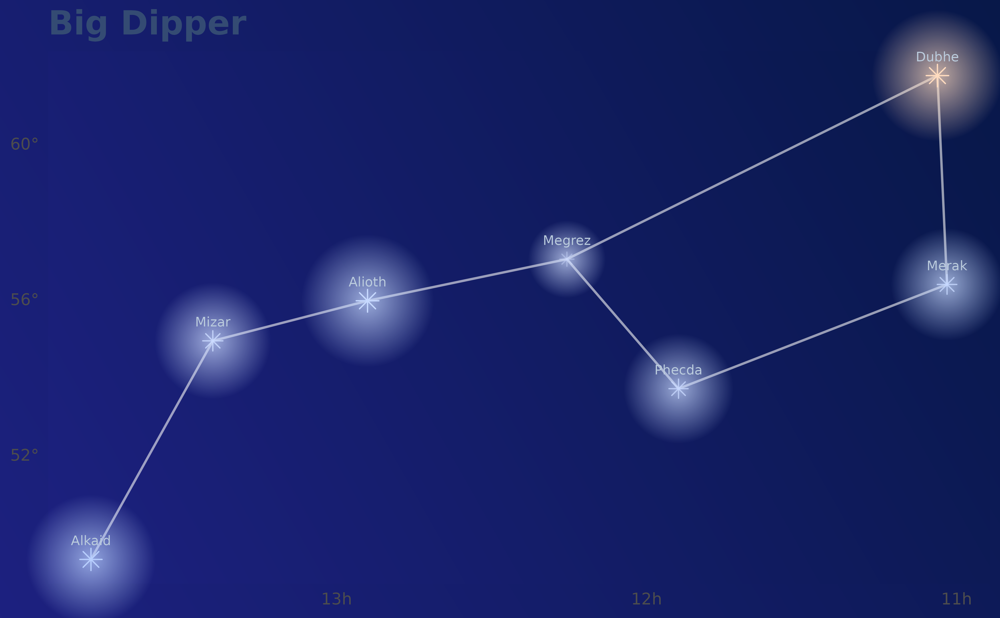
# source: https://de.wikipedia.org/wiki/Gro%C3%9Fer_B%C3%A4r#Sterne
# colours, coordinates all approximations of course
big_dipper <- data.frame(
star = c(
"Megrez",
"Dubhe",
"Merak",
"Phecda",
"Megrez",
"Alioth",
"Mizar",
"Alkaid"
),
ra_h = c(12.257, 11.062, 11.031, 11.897, 12.257, 12.900, 13.399, 13.792),
dec_d = c(57.03, 61.75, 56.38, 53.70, 57.03, 55.96, 54.93, 49.31),
mag = c(3.32, 1.81, 2.34, 2.41, 3.32, 1.77, 2.23, 1.86),
colour = c("#CFDDFF", "#FFDBBF", "#C7D9FF", "#C8D9FF", "#CFDDFF", "#C7D9FF", "#CBDBFF", "#BAD0FF")
)
big_dipper$x <- -big_dipper$ra_h
big_dipper$y <- big_dipper$dec_d
# Linear size mapping: brighter (lower mag) → larger point
mag_to_size <- \(m) pmax(0.7, (5.5 - m) * 1.0)
ggplot(big_dipper, aes(x = x, y = y)) +
geom_path(colour = "#F5F5F5", linewidth = 0.6, alpha = .6) +
geom_point_glow(
data = big_dipper[-1L, ], # don't plot Megrez a second time
aes(x = -ra_h, y = dec_d, size = mag_to_size(mag), colour = colour,
alpha = mag),
shape = 8,
glow_alpha = 0.75
) +
scale_alpha_continuous(range = c(1, 0.4), guide = "none") +
scale_size_identity() +
scale_colour_identity() +
geom_text(
aes(x = -ra_h, y = dec_d, label = star),
colour = "#bbccdd",
vjust = -1.5,
size = 2.5,
check_overlap = TRUE
) +
scale_x_continuous(
breaks = seq(-14, -8, by = 1),
labels = \(x) paste0(abs(x), "h")
) +
scale_y_continuous(labels = \(x) paste0(x, "°")) +
labs(title = "Big Dipper", x = NULL, y = NULL) +
coord_cartesian(clip = 'off') +
theme(
panel.background = element_rect(fill = grid::linearGradient(colours = c("#1D2180", "#081849")), colour = NA),
plot.background = element_rect(fill = grid::linearGradient(colours = c("#1D2180", "#081849")), colour = NA),
panel.grid = element_blank(),
text = element_text(colour = "#344B73"),
plot.title = element_text(size = 18, face = "bold")
)geom_segment_fade
geom_segment_fade() and geom_curve_fade()
are the fading counterparts of geom_segment() and
geom_curve(). The alpha gradient runs along each segment or
curve from (x, y) to (xend, yend);
fade_direction chooses which end fades.
df <- data.frame(x1 = 2.62, x2 = 3.57, y1 = 21.0, y2 = 15.0)
ggplot(mtcars, aes(wt, mpg)) +
geom_point() +
geom_curve_fade(
aes(x = x1, y = y1, xend = x2, yend = y2, colour = "curve"),
arrow = arrow(),
data = df
) +
geom_segment_fade(
aes(x = x1, y = y1, xend = x2, yend = y2, colour = "segment"),
data = df
)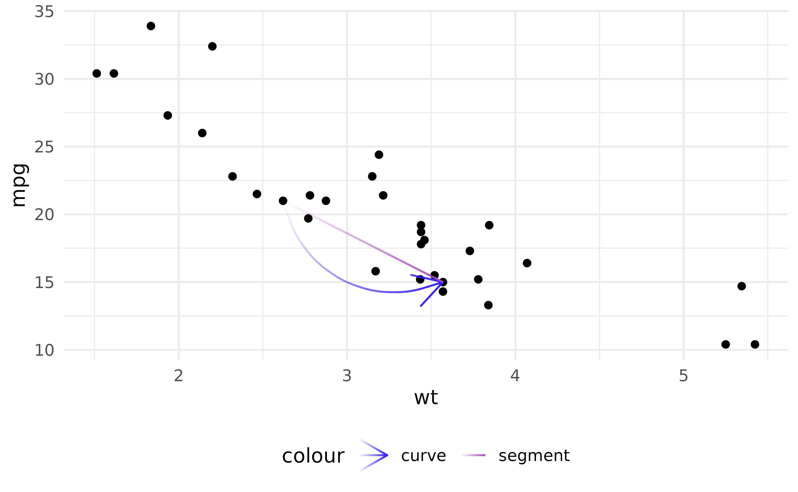
Under non-linear coordinates (e.g. coord_polar()), the
user-supplied endpoints are transformed to device space and the fade is
applied along the straight chord between them — the same behaviour as
geom_segment() itself. For a fade that
follows a curve implied by the coord, use
geom_hline_fade() / geom_vline_fade() /
geom_abline_fade(), which subdivide the line in data space
before rendering.
geom_path_fade
geom_path_fade(), geom_line_fade(), and
geom_step_fade() are the fading counterparts of
geom_path(), geom_line(), and
geom_step(). The fade runs along the path’s arc length, so
one or both ends can fade to transparent independently of the path’s
direction.
ggplot(economics, aes(date, unemploy)) +
geom_line_fade(linewidth = 1)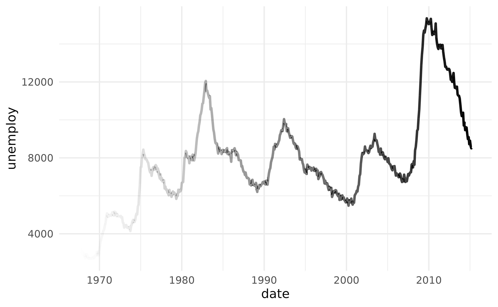
geom_step_fade() follows the step geometry, faded along
its visible length:
set.seed(7)
ggplot(data.frame(x = 1:12, y = cumsum(rnorm(12))), aes(x, y)) +
geom_step_fade(linewidth = 1.5, direction = "hv")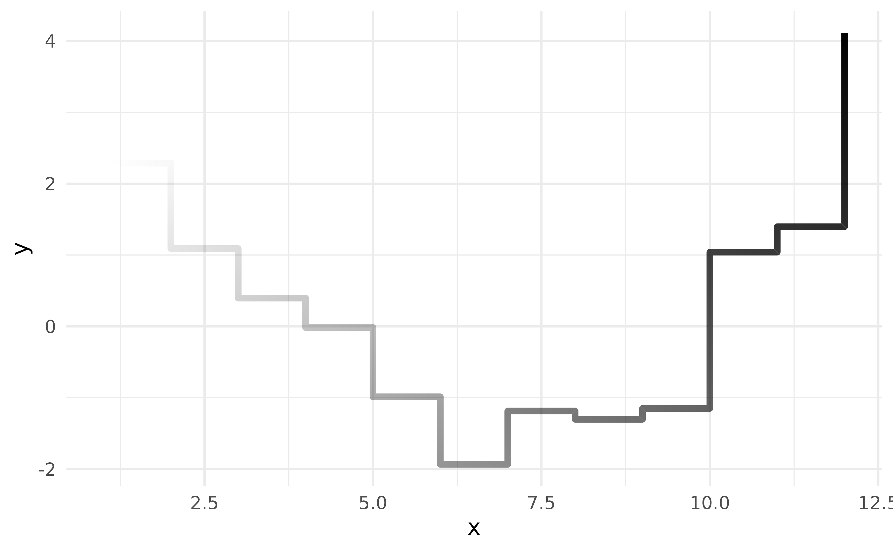
alpha_mode trades smoothness for performance:
-
"gradient"— one continuouslinearGradientmask along the whole path. Smoothest, slowest. -
"step"— per-segment alpha stepping. Fastest; discrete steps are visible for short paths. -
"auto"(default) — picks"gradient"for n ≤ 50,"step"above.
For self-crossing paths the alpha values compound at the crossing
pixels; see the Self-crossing paths section in
?geom_path_fade.
geom_abline_fade
geom_abline_fade(), geom_hline_fade(), and
geom_vline_fade() are the fading counterparts of
ggplot2’s reference-line geoms. The line is rendered with
an alpha gradient so it fades from solid at one end to fully transparent
at the other — or to both ends — under user control via
fade_direction.
p <- ggplot() +
geom_abline_fade(
colour = "#a84dbd",
slope = 1,
intercept = 0,
linewidth = 1,
fade_direction = "start" # default
) +
geom_hline_fade(
colour = "#d77e7b",
yintercept = 1,
linewidth = 1,
fade_direction = "end"
) +
geom_vline_fade(
colour = "#f4ae1b",
xintercept = 1,
linewidth = 1,
fade_direction = c("start", "end")
) +
xlim(-2, 2) +
ylim(-2, 2)
p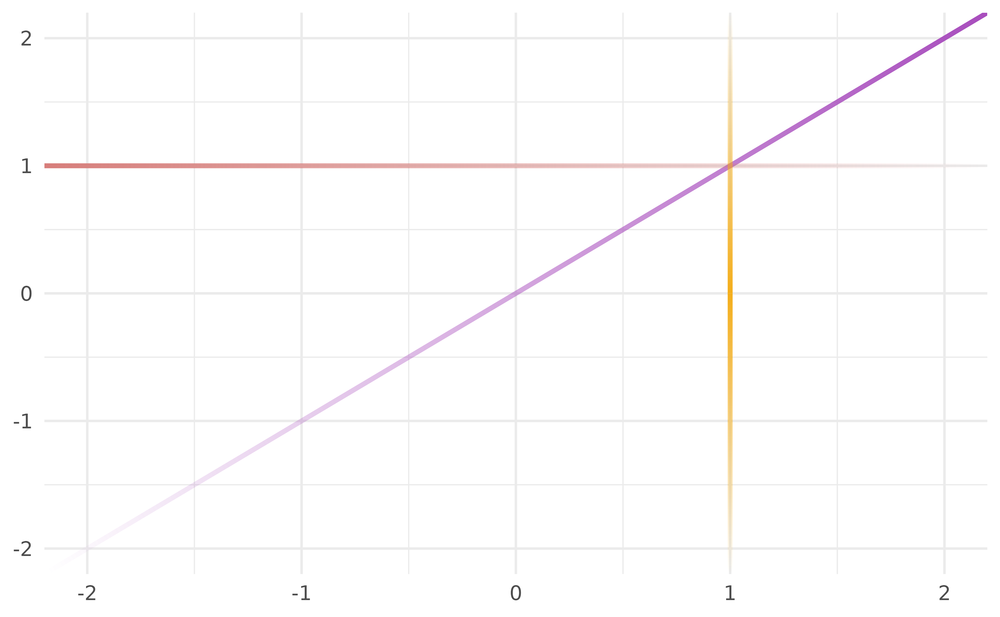
Under non-linear coordinates (e.g. coord_polar()), each
reference line is subdivided in data space before rendering so the fade
follows the curve that the coord transform produces, not a chord between
endpoints.
p + coord_polar()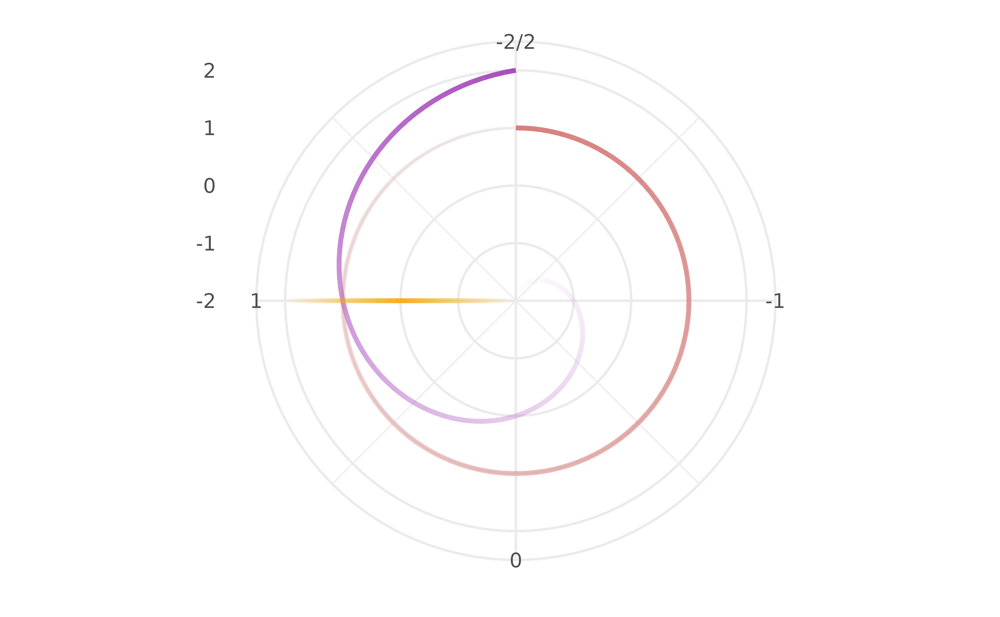
geom_rect_fade
The geom_rect_fade() function draws a rectangle with a
linear colour gradient, allowing you to subtly highlight elements. In
the following example, a geom_segment_fade() is also added
to serve as a border. Like all geom_*_fade() functions,
this one is primarily intended to enhance the visual appeal for the
viewer.
df <-data.frame(
x = seq_len(15),
y = c(90, 93, 88, 91, 86, 85, 89, 84, 96, 72, 68, 66, 62, 59, 46)
)
ggplot(df, aes(x, y)) +
geom_rect_fade(
data = data.frame(xmin = 10, xmax = 15, ymin = 0, ymax = 100),
mapping = aes(xmin = xmin, xmax = xmax, ymin = ymin, ymax = ymax),
fill = cols[1],
alpha = 0,
alpha_fade_to = 0.1,
inherit.aes = FALSE
) +
geom_segment_fade(
data = data.frame(x = 10, xend = 10, y = 100, yend = 0),
aes(x = x, xend = xend, y = y, yend = yend),
colour = cols[1],
alpha = 0.75,
alpha_fade_to = 0,
inherit.aes = FALSE
) +
geom_fourier(colour = cols[3]) +
geom_point(size = 4, colour = cols[3], alpha = 0.25) +
scale_x_continuous(NULL, breaks = 10, labels = "Breakpoint?") +
scale_y_continuous(NULL, limits = c(0, NA), labels = \(x) paste(x, "%")) +
theme_minimal() +
theme(panel.grid.minor = element_blank()) +
theme(panel.grid.major.x = element_blank()) +
theme(
axis.text.x = element_text(
size = 10,
colour = ggplot2::alpha(cols[1], 0.75),
face = "bold"
)
)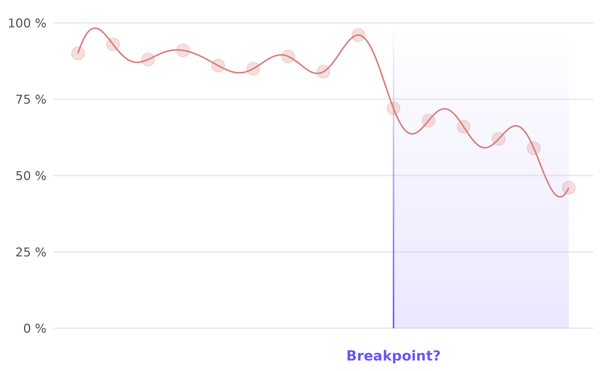
Pattern fills
Instead of a solid fade, geom_rect_fade() can fill each
rectangle with a texture that fades along with the alpha gradient. The
hatch() helper builds line hatching at any angle,
recoloured to the fill aesthetic:
df <- data.frame(xmin = 1, xmax = 9, ymin = 0, ymax = 6)
ggplot(df) +
geom_rect_fade(
aes(xmin = xmin, xmax = xmax, ymin = ymin, ymax = ymax),
fill = cols[1], alpha = 0.9, alpha_fade_to = 0,
pattern = hatch()
) +
theme_minimal()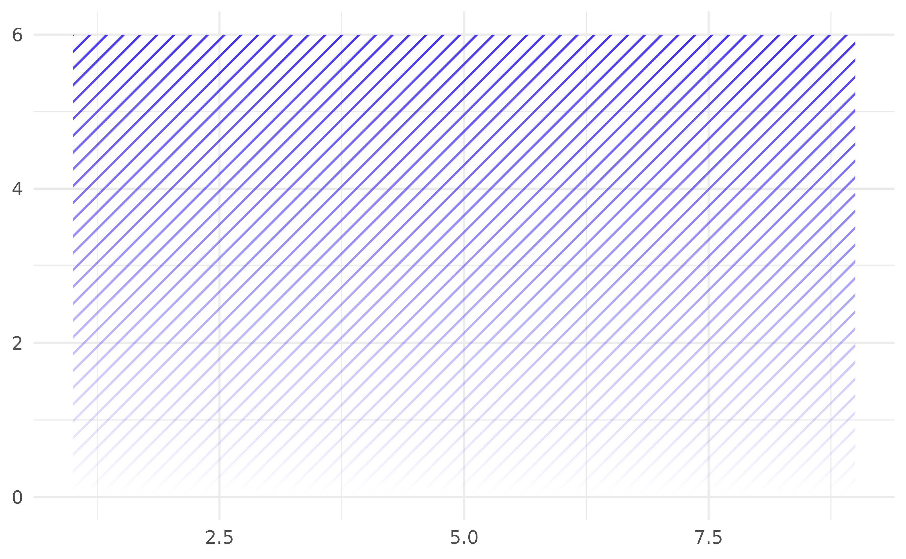
hatch() covers the common CAD-style fills from one
helper: hatch(angle) rotates the lines, and
style = "crossed" overlays a second family for a crosshatch
or grid. So hatch(style = "crossed") is a diagonal
crosshatch, hatch(90) a vertical stripe, and
hatch(0, style = "crossed") a square grid.
colour, linewidth, linetype, and
spacing (a physical distance, default
unit(2, "mm")) are all optional:
ggplot(df) +
geom_rect_fade(
aes(xmin = xmin, xmax = xmax, ymin = ymin, ymax = ymax),
fill = cols[3], alpha = 0.9, alpha_fade_to = 0,
pattern = hatch(angle = 30, style = "crossed", spacing = unit(3, "mm"))
) +
theme_minimal()For the five common presets you can skip the constructor and pass a
string — pattern = "crossed" is shorthand for
pattern = hatch(style = "crossed"), the same way
position = "dodge" stands in for
position_dodge(). The vocabulary is "stripe"
(the diagonal default), "crossed", "vertical",
"horizontal", and "grid" (vertical +
horizontal). Reach for hatch() itself when you want to tune
angle or spacing.
ggplot(df) +
geom_rect_fade(
aes(xmin = xmin, xmax = xmax, ymin = ymin, ymax = ymax),
fill = cols[4], alpha = 0.9, alpha_fade_to = 0,
pattern = "grid"
) +
theme_minimal()The hatch vocabulary is borrowed, with thanks, from the ggpattern
package by Trevor L. Davis; for a far richer set of patterns use
ggpattern directly.
Build your own pattern
pattern also accepts a grid grob, which is
drawn once and clipped to each rectangle. This is the
reliable way to get continuous custom hatching:
grid::pattern() tiling clips every tile at its own bounds,
so diagonal or wavy lines come out as disconnected dashes. Drawing a
single grob and clipping it keeps the lines continuous.
The key is to build the grob in "npc" units, so it spans
the rectangle (x and y run from 0 to 1 across
width and height). Here is a wavy-line “pattern”: a stack of sine curves
stepped up the height, overshooting the [0, 1] range so
clipping trims them cleanly. Leave the stroke colour unset —
geom_rect_fade() recolours it to the fill
aesthetic for you.
wave_hatch <- function(spacing = 0.14, frequency = 6, amplitude = 0.04,
linewidth = 1.5) {
t <- seq(0, 1, length.out = 250)
y0 <- seq(-0.2, 1.2, by = spacing) # overshoot; clipping trims the ends
lines <- lapply(y0, function(y) {
grid::linesGrob(
x = grid::unit(t, "npc"),
y = grid::unit(y + amplitude * sin(2 * pi * frequency * t), "npc"),
gp = grid::gpar(lwd = linewidth)
)
})
grid::gTree(children = do.call(grid::gList, lines))
}
ggplot(df) +
geom_rect_fade(
aes(xmin = xmin, xmax = xmax, ymin = ymin, ymax = ymax),
fill = cols[3], alpha = 0.9, alpha_fade_to = 0,
pattern = wave_hatch()
) +
theme_minimal()For self-contained motifs (dots, small shapes) rather than
continuous lines, a tiled grid::pattern() works well and is
simpler — tiling only breaks down for lines that need to cross tile
boundaries:
dots <- grid::pattern(
grid::circleGrob(r = grid::unit(1, "mm"), gp = grid::gpar(fill = "black")),
width = grid::unit(5, "mm"), height = grid::unit(5, "mm"), extend = "repeat"
)
ggplot(df) +
geom_rect_fade(
aes(xmin = xmin, xmax = xmax, ymin = ymin, ymax = ymax),
fill = cols[2], alpha = 0.9, alpha_fade_to = 0,
pattern = dots
) +
theme_minimal()Pattern fills require a graphics device with Porter-Duff compositing
(for example ragg::agg_png() or
grDevices::svg()); on devices without it the geom falls
back to a flat semi-transparent fill.
geom_col_fade
geom_col_fade() is the fading counterpart of
geom_col(): each bar is filled with a vertical alpha
gradient, opaque at the tip and transparent at the baseline.
geom_bar_fade() is the stat = "count" alias.
Bars render with sharp corners by default but rounded bar charts are
supported via radius argument. The alpha_scope
argument controls how the gradient’s normalisation reference is
chosen:
-
"bar"— every bar uses its own range; every peak hits full opacity. -
"global"— every bar normalises to the tallest bar in the entire layer, including across facets. -
"x"/"y"— every bar normalises to the tallest bar at the same discrete x (or y) position; useful for comparing within a stack or dodge cluster."x"is for vertical bars (aes(x = ...)),"y"for horizontal bars (aes(y = ...)). The scope follows the mapping, not the coord:coord_flip()alone does not toggle this — to use"y"you must map your category toy. -
"group"— every bar normalises to the tallest bar in itsggplot2group (the interaction of all discrete aesthetics). Most useful with explicitaes(group = …); with the typicalaes(x = factor, fill = factor)it degenerates to"bar"because every (x, fill) combination is its own group. -
"fill"/"colour"— every bar normalises to the tallest bar with the same fill (or colour). Bars sharing a fill share an alpha range across x and across facets.
Comparing alpha_scope modes
A small toy dataset, rendered once per mode.
"bar" — every bar fades within its own height range, so
each peak hits full opacity:
df <- data.frame(
x = rep(c("A", "B"), each = 3),
y = c(1, 2, 3, 2, 4, 1),
grp = rep(c("X", "Y", "Z"), 2)
)
# by default each bar fades from fully opaque
# at top to full transparency at baseline
ggplot(df, aes(x, y, fill = grp)) +
geom_col_fade(
position = "dodge",
alpha_scope = "bar"
)"global" — the tallest bar in the whole layer
(y = 4) is the only one at full opacity. Every other bar
fades in proportion to its own height:
ggplot(df, aes(x, y, fill = grp)) +
geom_col_fade(
position = "dodge",
alpha_scope = "global"
)"x" — within each x category, the taller of the two
dodged bars hits full opacity; the shorter one fades to its (own height
/ max at this x) ratio:
ggplot(df, aes(x, y, fill = grp)) +
geom_col_fade(
position = "dodge",
alpha_scope = "x"
)"fill" — bars sharing the same fill share an alpha range
across x positions and across panels:
ggplot(df, aes(x, y, fill = grp)) +
geom_col_fade(
position = "dodge",
alpha_scope = "fill"
)The "y" mode is the mirror of "x" for
horizontal bars — reach for it by mapping your category to
y (aes(y = ...)), not by flipping the coord.
coord_flip() alone leaves flipped_aes
unchanged, so the orientation guard would still reject "y"
in that case. "colour" is the mirror of "fill"
when you map the colour aesthetic discretely.
ggplot(df, aes(y, x, fill = grp)) +
geom_col_fade(
position = "dodge",
alpha_scope = "y"
)geom_histogram_fade
geom_histogram_fade() is the fading counterpart of
geom_histogram(). It shares the same parameters and
underlying mechanics like geom_bar_fade() and
geom_col_fade() rounded, but uses
stat_bin().
ggplot(iris, aes(Sepal.Width, fill = Species)) +
geom_histogram_fade(
alpha_scope = "fill",
alpha_fade_to = 0.25,
bins = 15,
position = "dodge"
) +
labs(x = "Sepal Width", y = "Count", fill = NULL)geom_unit_bar
The geom_unit_*() family draws bar charts where each bar
is a strip of discrete cells. By default, every cell represents one unit
of the value axis (or cell_size units when aggregating).
Inspired by isotype / pictogram visualisations and the waffle
package, and built on the standard ggplot2 layering and
coord systems so it composes cleanly with themes, facets, coords.
Three constructors, mirroring the ggplot2
vocabulary:
-
geom_unit_bar()counts observations (likegeom_bar()). -
geom_unit_col()uses pre-computedy(likegeom_col()). -
geom_unit_histogram()bins a continuous variable (likegeom_histogram()).
Basic usage
Six examples on the same p, building from a bare bar
chart to a dodged and rounded version with a transformed value axis. The
coord_equal(ratio = ...) formula for square cells under
position = "dodge" is
ratio = width / (n_groups * cell_size) (see the dodge
caveat below for the horizontal-orientation form). With defaults
width = 1, cell_size = 1, and
mtcars$vs having two levels, that means
ratio = 1/2.
p <- ggplot(mtcars, aes(carb))
# Bare bar chart: each cell = 1 observation
p + geom_unit_bar()
#> `geom_unit_*()` works best with a fixed-ratio coordinate.
#> ℹ Add `+ coord_equal()` to keep cells square.
#> This message is displayed once per session.
# Square cells with rounded corners
p +
geom_unit_bar(radius = unit(3, "pt")) +
coord_equal()
# Stacked cells coloured by `vs`. With one stack per `carb` value and
# default width, `coord_equal()` already renders square cells.
p +
geom_unit_bar(radius = unit(3, "pt")) +
coord_equal() +
aes(fill = factor(vs))
# Dodged cells: each sub-bar shrinks to `width / n_groups`. With
# `vs` (n_groups = 2) and default `width = cell_size = 1`, the
# square-cell ratio is `ratio = 1 / 2`.
p +
geom_unit_bar(
radius = unit(3, "pt"),
position = position_dodge(preserve = "single")
) +
coord_equal(ratio = 1 / 2) +
aes(fill = factor(vs))
# Add an outline and let cells render slightly wider than tall
# (visual aspect 2:1). The factor of 2 in the denominator is purely
# aesthetic — square cells under dodge would be `ratio = 1 / 2`;
# `ratio = 1 / (2 * 2)` stretches cells horizontally to give the
# outlined edges more room to breathe.
p +
geom_unit_bar(
radius = unit(3, "pt"),
position = position_dodge(preserve = "single"),
colour = "#333333"
) +
coord_equal(ratio = 1 / (2 * 2)) +
aes(fill = factor(vs))
# Same chart under `scale_y_sqrt()`: cells tile in transformed space
# (heights shrink as y grows). See the "Scale transforms run before
# the stat" caveat below.
p +
geom_unit_bar(
radius = unit(3, "pt"),
position = position_dodge(preserve = "single"),
colour = "#333333"
) +
coord_equal(ratio = 1 / 2) +
aes(fill = factor(vs)) +
scale_y_sqrt()#> ! `radius` of 3 points exceeds the largest displayable corner radius for one or
#> more rendered shapes, which is 1.99 points.
#> ℹ Falling back to each shape's maximum displayable radius.
#> This message is displayed once every 8 hours.When counts are pre-computed, switch to geom_unit_col()
— the coord_equal(ratio = ...) lever works identically. The
example below mimics a familiar real-world shape: three fill levels in
the layer, but each row contains at most two of them.
position_dodge(preserve = "single") sizes every sub-bar to
width / max_groups_per_cluster, so the effective
n_groups is 2, not
nlevels(fill) = 3. The square-cell formula for horizontal
bars (ratio = n_groups * cell_size / width) therefore gives
ratio = 2, not 3 — a subtle case worth keeping in mind when
deciding which ratio value to pass.
df <- data.frame(
variable = factor(c("A", "A", "B", "B", "C"), levels = c("C", "B", "A")),
fill = factor(c("X", "Y", "X", "Z", "X")),
count = c(3, 5, 4, 2, 6)
)
ggplot(df, aes(count, variable, fill = fill)) +
geom_unit_col(
radius = unit(1, "pt"),
position = position_dodge(preserve = "single"),
colour = "#333333"
) +
labs(x = NULL, y = NULL) +
coord_equal(ratio = 2) + # max 2 groups per variable so ratio = 2, not 3
theme(legend.position = "bottom")geom_unit_histogram
A tribute to The Pudding’s
editorial style, using geom_unit_histogram() with a
continuous fill mapping. Each cell is one observed
eruption; cells are coloured by where they fall along the bin axis.
bw <- diff(range(faithful$eruptions)) / 30
ggplot(faithful, aes(eruptions)) +
geom_unit_histogram(
aes(fill = after_stat(x)),
radius = unit(1, "pt")
) +
guides(fill = "none") +
scale_x_continuous(
breaks = c(2, 3, 4, 5),
labels = paste(2:5, "min"),
expand = expansion(mult = c(0.02, 0.02))
) +
scale_y_continuous(expand = expansion(mult = c(0, 0.10))) +
coord_equal(ratio = 1/3 * bw, clip = "off") +
labs(
title = "Old Faithful runs in two rhythms",
x = NULL, y = NULL
) +
theme_minimal()
#> `stat_bin()` using `bins = 30`. Pick better value `binwidth`.